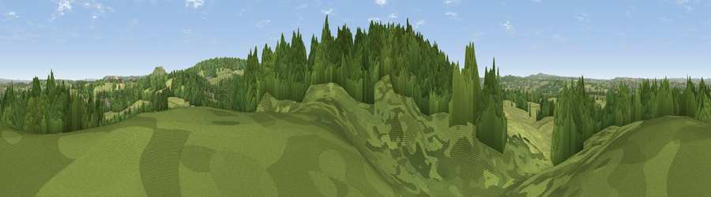

Viewpoint near East Woodlands
#35183 in England · top 70% of its area beats it · near East WoodlandsThe view, rendered

A 360° render of this exact spot computed from the terrain model, tree cover and land cover — summer colours, afternoon light, calibrated against photographs of famous viewpoints. Real trees, hedges and buildings will differ in detail.
The panorama
Grey silhouette: terrain skyline in each direction (720 bearings, Earth curvature and refraction included). Dashed green: skyline with trees (+15 m) and buildings (+8 m) as obstacles. Blue strip: how far the ground is visible on each bearing.
Where the view opens
Wedge length = distance to the farthest visible ground on that bearing (vegetation-aware). Rings at 10, 25 and 50 km.
What fills the view
56% woodland · 38% grassland · 4% cropland · 2% built-up
Angular shares of the visible panorama (visual magnitude), not map area. Landscape diversity 0.39 (0–1 Shannon).
Key numbers
More beautiful places nearby
The staircase of upgrades: each row has a higher view potential than everything closer. Driving times are estimates from straight-line distance, calibrated against real road routing — check an actual route before setting out.
| Place | Direction | Drive | Score |
|---|---|---|---|
| Viewpoint near East Woodlands | S · 0 km | ~2 min | 43.4 |
| Viewpoint near Horningsham | ESE · 3 km | ~7 min | 59.2 |
| Viewpoint near Horningsham | ESE · 3 km | ~7 min | 61.2 |
| Cley Hill | E · 4 km | ~9 min | 76.8 |
| Viewpoint near Lamyatt | WSW · 16 km | ~28 min | 77.8 |
| Viewpoint near Berwick St John | SSE · 27 km | ~43 min | 78.2 |
| Beacon Batch | WNW · 34 km | ~52 min | 79.4 |
| Bleadon Hill [Loxton Hill] | WNW · 45 km | ~65 min | 79.6 |
51.19779, -2.28797 · source: screening · position refined by local search. Computed location — check access rights before visiting.